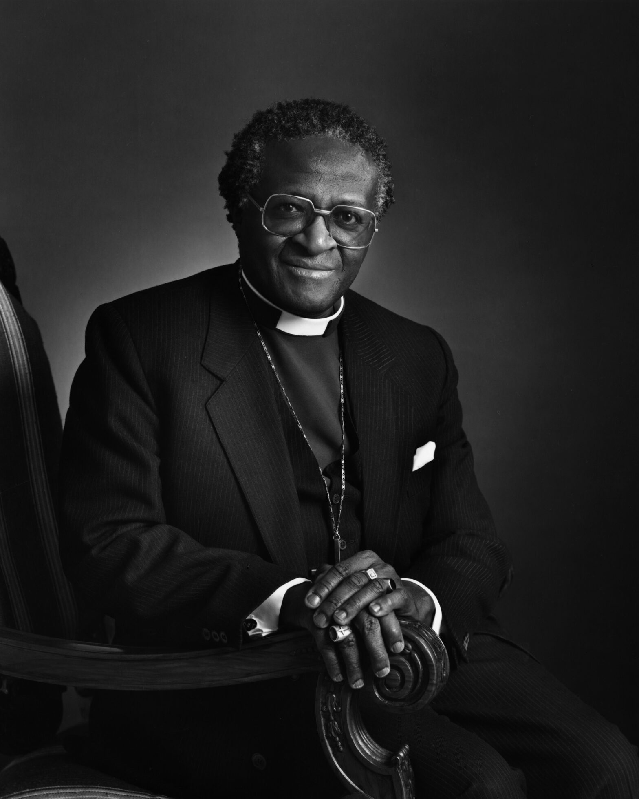

"Do your little bit of good where you are; its those little bits of good put together that overwhelm the world."
Desmond Tutu Health Foundation
The Desmond Tutu Health Foundation (DTHF) is a registered non-profit company established in association with the Desmond Tutu HIV Centre, an accredited research centre within the Faculty of Health Sciences, University of Cape Town (UCT).
"You want a leader who is also a servant"
A timeline of the Archbishop's life
- 1931, October 7: Desmond Mpilo Tutu is born in Klerksdorp, a city in the North West Province of South Africa.
- 1953: Tutu begins his studies at the University of Fort Hare, but his education is interrupted by political activism.
- 1958: Tutu marries Nomalizo Leah Shenxane.
- 1960: He resumes his studies and graduates from the University of South Africa.
- 1961-1962: Tutu teaches at Munsieville High School in Krugersdorp.
- 1962-1966: He studies theology in the United Kingdom at King's College London and later at the University of London.
- 1967: Tutu returns to South Africa and is ordained as a priest.
- 1978-1985: Tutu serves as the Bishop of Lesotho.
- 1984: He is awarded the Nobel Peace Prize for his nonviolent struggle against apartheid.
- 1986-1996: Tutu becomes the first black Archbishop of Cape Town and bishop of the Church of the Province of Southern Africa (now the Anglican Church of Southern Africa).
- 1995-1999: Tutu chairs the Truth and Reconciliation Commission in post-apartheid South Africa.
- 1996: He retires from the position of Archbishop of Cape Town.
- 2009: Tutu announces his retirement from public life.
- 2021, December 26: Archbishop Desmond Tutu passes away at the age of 90 in Cape Town, South Africa.